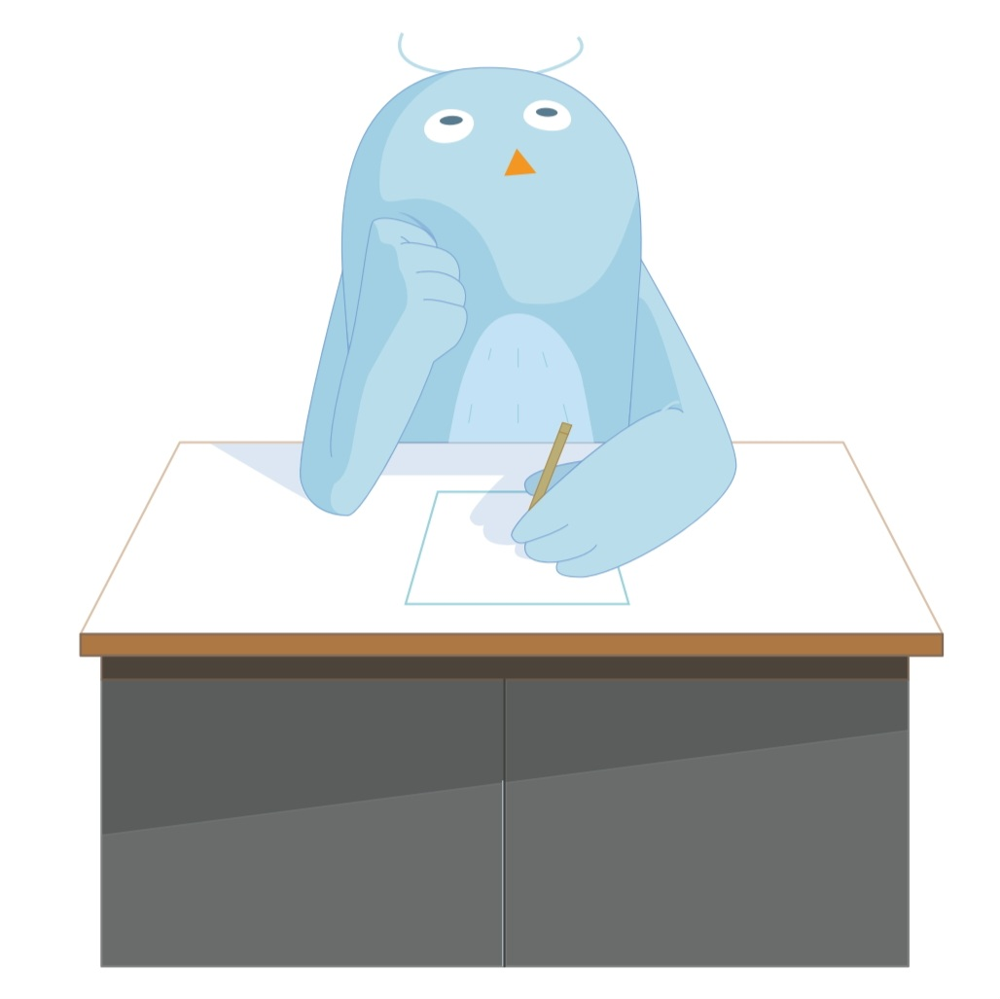

HAPPY BUDDY DAY !
00
:
00
pm
여행 성향 테스트 결과
내면을 담는 작가
느긋하면서도 창의적인 여행 기록자

당신은 여행 중 즉흥적으로 일어나는 순간을 기록하며 즐기는 여행자입니다. 계획보다는 현장에서 만나는 순간을 중요하게 생각하고, 이를 카메라로 담으려고 합니다. 실내 활동을 즐기면서도, 새로운 경험을 하는 것을 두려워하지 않으며 그 순간을 즐깁니다.
Tips
카페 창가, 전시회 한 구석 등 감각적인 순간을 사진으로 남기기 좋은 공간을 탐색하세요.
여유로운 실내 활동은 당신의 스타일에 잘 맞고, 여행을 더욱 즐겁게 만들어줄 거예요.
Best Spots
스페인 바르셀로나: 다채로운 거리와 예술이 넘치는 도시입니다.
이탈리아 로마: 역사적인 순간을 기록하기 좋은 여행지입니다.
영국 런던: 다양한 활동을 즐기면서 그 순간을 사진으로 담을 수 있어요.